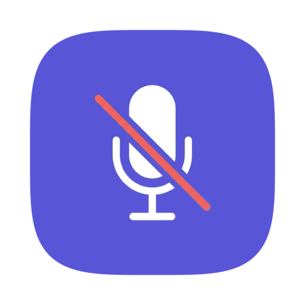
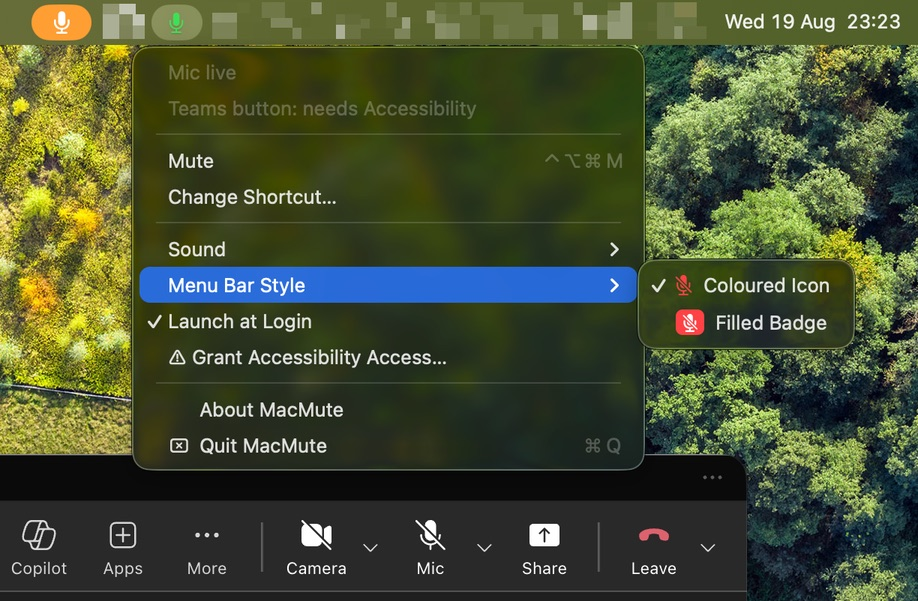

One shortcut to mute your mic from anywhere on macOS.
A free, open-source menu bar app that gives macOS the global microphone mute hotkey it never shipped with. It mutes the audio device itself, so a single shortcut covers every app at once.
macOS 13 or later · MIT licensed · no account, no telemetry
Download the .dmg from the latest release, open it, and drag MacMute into Applications. Then clear the quarantine flag once:
xattr -cr /Applications/MacMute.appMacMute is signed ad-hoc rather than with a paid Apple Developer ID, so macOS blocks the first launch until you do this. Rather not touch Terminal? Open MacMute, let it be blocked, then go to System Settings › Privacy & Security and click Open Anyway.
Every meeting app has its own mute shortcut, and they share one limitation: they only listen while their own window is in front. Teams, Zoom and Meet all stop hearing you the moment you switch to your editor, your browser or your notes — which is exactly when you need to mute.
MacMute sits below all of them. It writes to the microphone through CoreAudio, so no app can talk over it, and it answers wherever you happen to be looking.

macOS has no built-in global mute hotkey — the mute key on a Mac keyboard silences output, not your microphone. MacMute adds the missing one: press ⌃⌥⌘M from any app, or bind whatever combination you prefer.
Every app. MacMute writes to the audio device through CoreAudio rather than asking any particular program to be quiet, so Zoom, Google Meet, Slack, Discord, FaceTime and anything else recording at that moment all go silent together.
Teams does have one — hold ⌥Space once you enable Keyboard shortcut to unmute in Settings › Privacy. So do Zoom and Google Meet. All three share a limit: they only respond while their own window is in front. MacMute's works from wherever you actually are, and mutes the device rather than the app.
Yes — free, open source, MIT licensed. No account, no subscription, no analytics and no network access.
Muting needs none at all. Accessibility is only used to press the Mute button inside Teams; deny it and everything else still works, you simply lose the in-app indicator. MacMute never asks for microphone access, because it silences the device rather than listening to it.